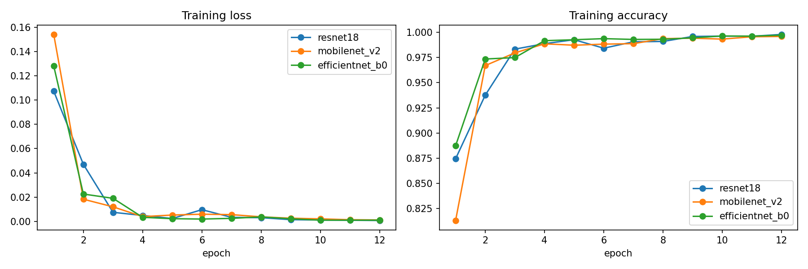
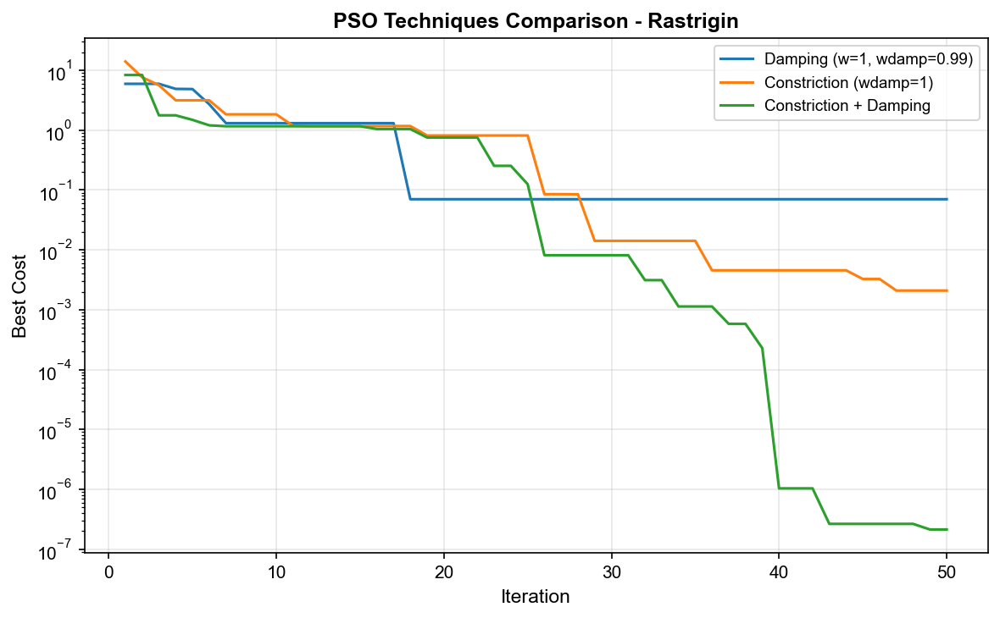

Muhammad Jahanzaib Awan
AI / Machine Learning Engineer
Deep learning across vision, language & robotics — built on rigorous, leakage-aware evaluation.
Download CV
Hi, I build & evaluate ML systems.
Reproducible experiments, honest baselines, no data leakage. Seeking graduate ML Engineer / Data Scientist roles.

UAV Aerial Object Classification
7-class classification of 8,903 crops — CNNs vs classical features, and proof of how a naïve split inflates the score.
EfficientNet-B0 · 0.876 acc Read case study →
Dialogue Generation: GRU / LSTM / GPT-2
A well-tuned GRU beat a LoRA-tuned GPT-2 on every metric, on the Cornell Movie-Dialogs Corpus.
perplexity 12.39 · best Read case study →
Robot Localization: AMCL / EKF / SLAM
Three indoor-localization strategies on a TurtleBot3, measured against ground truth.
EKF 0.0047 m error Read case study →
PSO on Rastrigin
Tuned swarm dynamics on a multimodal benchmark for far faster convergence.
90.8% fewer iterations Read case study →
Traffic-Signal Fuzzy System
A Mamdani controller mapping traffic density & queue length to adaptive green-phase timing.
distinction-assessed Read case study →Honest evaluation
I assume good numbers are wrong until proven otherwise. Leakage-aware splits, the right metric for the data, no train/test contamination — as in the UAV project, where a naïve split inflated F1 by 0.5.
Reproducibility
Fixed seeds, logged configs, tracked runs (Weights & Biases). Every result in these case studies comes from a run I can re-execute and a figure I generated.
Strong baselines
Before reaching for a transformer, I benchmark the simple thing. A tuned GRU beating LoRA-GPT-2, or classical features framing the CNN gain — baselines keep claims honest.
 Python
Python
 R
R
 PyTorch
PyTorch
 scikit-learn
scikit-learn
 Hugging Face
Tableau
Hugging Face
Tableau
 ROS
ROS
 Git
Git
Let's build something.
Open to graduate Machine Learning Engineer & Data Scientist roles. I usually reply within 24 hours.